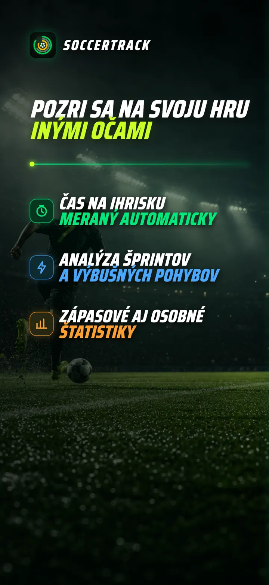
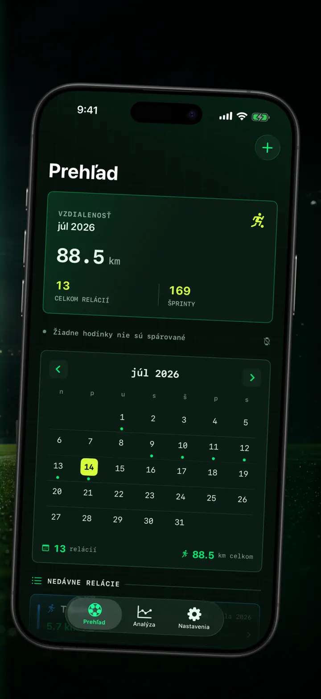
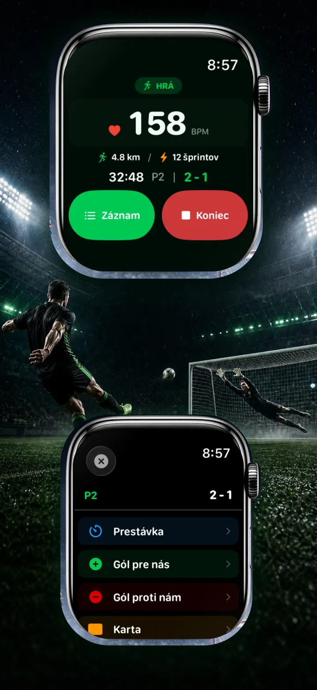
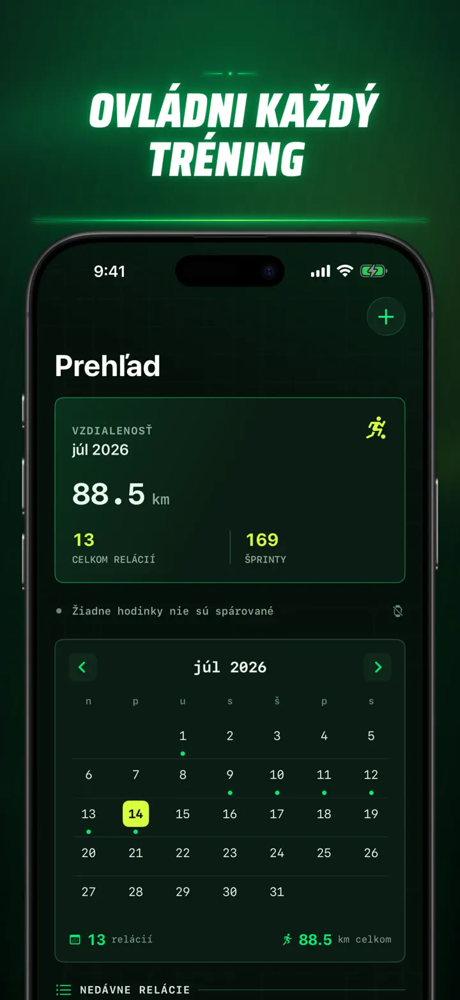
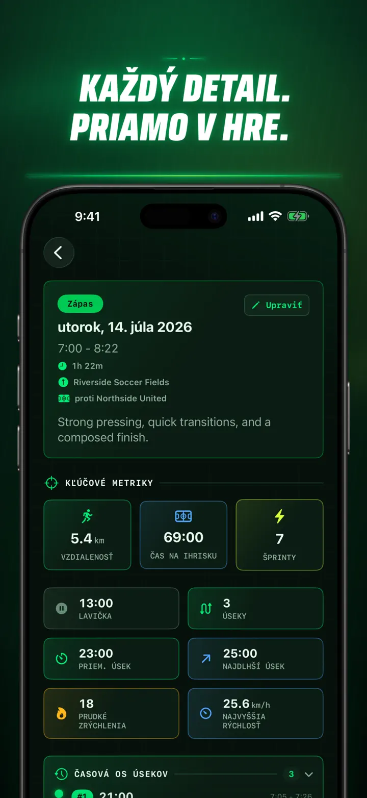
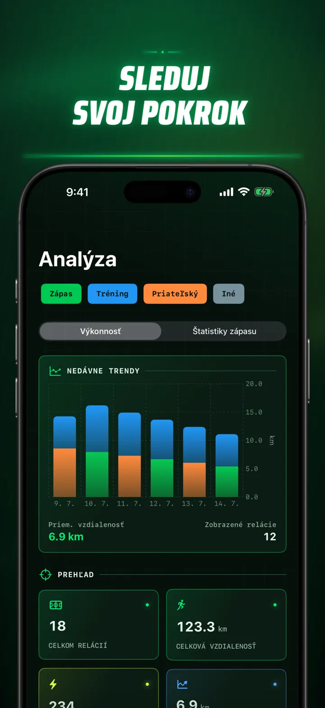
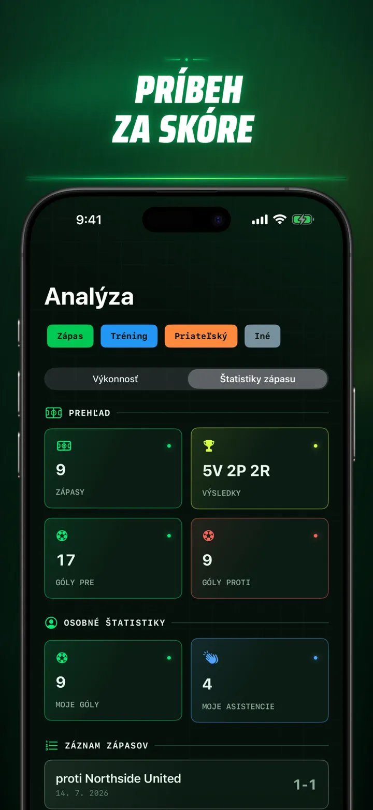
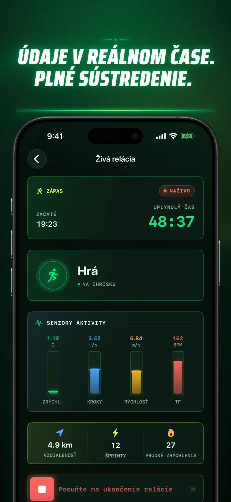
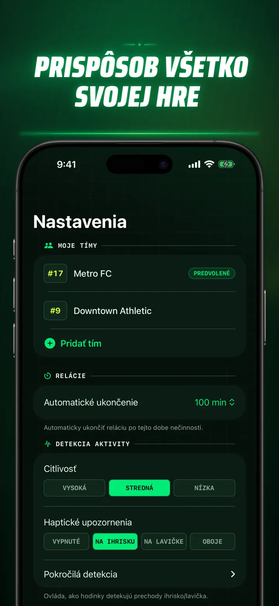
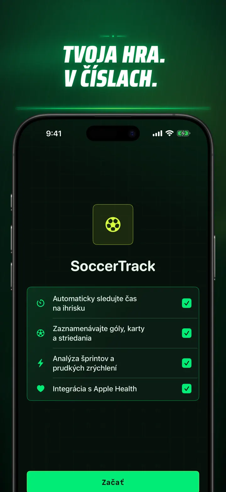

Soccer Time Track
Futbal: čas v hre & analýza
Spustite reláciu a hrajte. Apple Watch automaticky rozlíši čas na ihrisku a lavičke a zaznamená živé metriky, šprinty, udalosti aj trendy.
Stiahnuť v App Store
O aplikácii
Pozrite sa na svoj zápas inak.
Soccer Time Track premení Apple Watch na zápasový tracker pre hráčov, ktorí chcú vedieť viac než konečný výsledok. Spustite reláciu na zápästí, sústreďte sa na hru a potom si na iPhone pozrite podrobný obraz svojho výkonu.
AUTOMATICKÝ ČAS NA IHRISKU
Zistite, kedy ste boli naozaj v hre. Signály pohybu, cvičenia a polohy pomáhajú rozlíšiť aktívnu hru, nízku aktivitu a pobyt na lavičke. Získate:
- Čas na ihrisku a lavičke
- Herné úseky a prehľadnú časovú os
- Podrobný rozbor priebehu celej relácie
ZÁPAS ZO ZÁPÄSTIA
Vyberte Zápas, Tréning, Priateľský zápas alebo Iné. Počas hry zaznamenajte:
- Góly za a proti
- Vlastné góly a asistencie
- Žlté a červené karty
- Striedania a zmeny polčasov
VÁŠ VÝKON V ČÍSLACH
Sledujte viac než len minúty:
- Vzdialenosť
- Priemernú a maximálnu rýchlosť
- Šprinty a vysoko intenzívne zrýchlenia
- Srdcovú frekvenciu a aktívne kalórie
- Kadenciu a zrýchlenie
ŽIVÉ DÁTA, PLNÉ SÚSTREDENIE
Spárovaný iPhone môže zobrazovať živé metriky, zatiaľ čo Apple Watch ďalej zaznamenáva cvičenie. Vy sa sústredíte na zápas a údaje vznikajú na pozadí.
SLEDUJTE SVOJ POKROK
Uchovávajte zápasy, tréningy, priateľské stretnutia aj ďalšie relácie v jednej histórii. Prezerajte trendy a osobné rekordy, porovnávajte výkony a pridajte tím, číslo dresu, súpera, miesto aj poznámky, aby zostal zachovaný príbeh každého výsledku.
Potrebujete údaje inde? Exportujte relácie, herné úseky a zápasové udalosti vo formáte CSV alebo JSON.
PRE APPLE WATCH A APPLE HEALTH
S vaším povolením používa Soccer Time Track údaje cvičenia, srdcovej frekvencie, pohybu a polohy na tvorbu prehľadov a ukladá dokončené futbalové cvičenia do Apple Health. Automatické sledovanie vyžaduje Apple Watch. Reláciu môžete pridať aj ručne na iPhone.
VAŠE ÚDAJE, VÁŠ ZÁPAS
Relácie zostávajú na vašich zariadeniach a pri zapnutej synchronizácii s iCloudom vo vašej súkromnej databáze iCloud. Soccer Time Track nevyžaduje účet, neobsahuje reklamy a nepoužíva analytiku tretích strán.
Prestaňte odhadovať, koľko ste odohrali. Uvidíte, čo ste so svojím časom dokázali.
Zásady ochrany osobných údajov: https://masawata.net/SoccerTimeTrack/privacy-policy.html Podmienky používania: https://www.apple.com/legal/internet-services/itunes/dev/stdeula/
Snímky obrazovky









Soccer Time Track
Spustite reláciu a hrajte. Apple Watch automaticky rozlíši čas na ihrisku a lavičke a zaznamená živé metriky, šprinty, udalosti aj trendy.
Stiahnuť v App Store